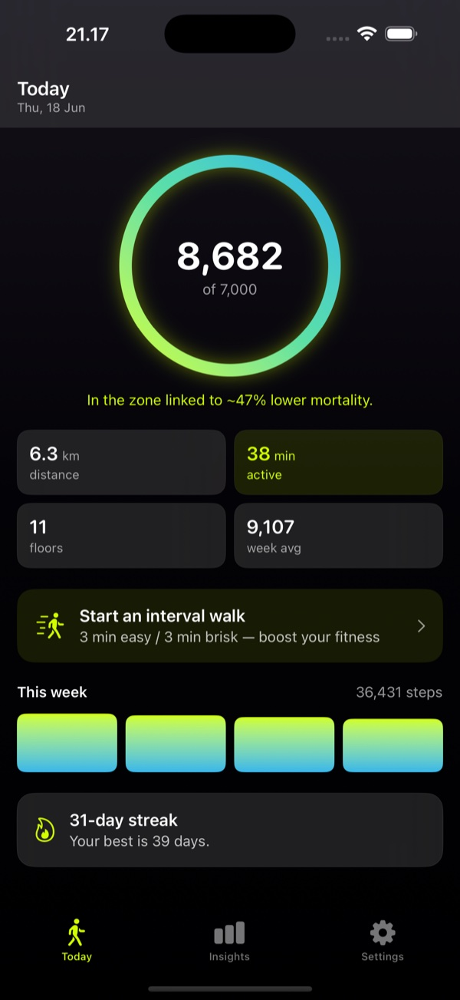
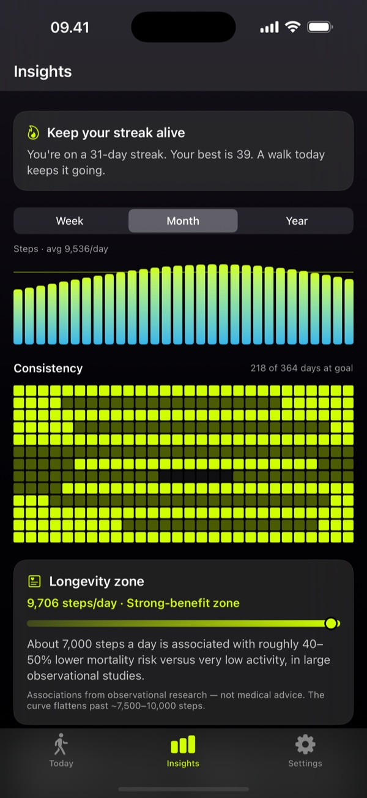
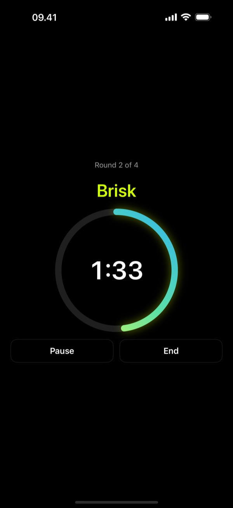

Every step counts.
Walkful turns your daily walks into something meaningful — calmly, and entirely on your phone. Apple Health gives you the numbers; Walkful gives them meaning.
Designed around meaning, not vanity metrics
Walkful is built to support internal motivation, providing healthy daily habits without manipulation.
Meaning over numbers
Your progress ring is paired with what it means for your health — not just a raw count. Grounded in actual health science.
Compete with yourself
Beat your best week and keep your streak. No public leaderboards, no social pressure, and no pace-shaming.
Gentle nudges
Optional, intelligent reminders that only fire when you've been sedentary too long during your chosen active hours.
Insights that matter
A personal consistency heatmap, your best time of day, and brisk-minute trends. Clean, curated, and never cluttered.
Private by architecture
No user accounts. No servers. No cloud databases. All health tracking data stays processed on your iPhone.
Beautiful & calm
A premium, native design that's a pleasure to open every day — smooth gradients, gentle motion, and full light & dark support.
Beautiful utility, designed for your day



Walking is everyday medicine
No gym, no lycra, no pressure — just steps that add up. Walkful keeps the focus on movement that fits your life.
The science of why walking matters
Walkful is built on medical evidence, not fitness marketing. For decades, the public has been told that 10,000 steps is the gold standard. In reality, that target originated as a marketing campaign for a Japanese pedometer (the Manpo-kei, translating to "10,000-steps meter") in 1965.
According to research published by Danish physician and professor Bente Klarlund Pedersen, every single step counts. Moving is medicine: it increases serotonin and dopamine levels, improves heart health, and lowers cardiovascular risks. Walkful translates these clinical insights directly into your daily tracking.
Read the Lancet Public Health Meta-Analysis →Your privacy is built into the architecture
Most popular health and step tracking apps monetize your movement data. Walkful is different: we have no database, no accounts, and no backend servers. All calculations and historical insight trends are compiled locally using Apple HealthKit. Your data never leaves your iPhone.
Read our Privacy PolicyFrequently asked questions
What makes Walkful different from Apple Health or standard pedometers?
Standard apps show you raw numbers without context. Walkful places your steps into a medical perspective based on public health studies, showing you what your active minutes mean. Furthermore, Walkful provides guided interval walking, custom sedentary notifications, and deep local insights without collecting a single byte of your data.
Do I really need 10,000 steps per day?
No. The 10,000 steps goal was a Japanese marketing gimmick from 1965, not a medical recommendation. Peer-reviewed research shows that the largest health benefit occurs between 5,000 and 7,500 steps. Walkful sets a default goal of 7,000 steps based on this evidence, which you can adjust to fit your life. Every step counts.
Does the app support Apple Watch?
Yes. Walkful reads your aggregated activity directly from Apple Health. Any steps or active minutes recorded by your Apple Watch flow seamlessly into Apple Health and are automatically reflected inside Walkful.
How is the app priced? Are there any subscriptions?
Walkful is a free download containing all core step tracking features. You can unlock Walkful Pro (adding deep Insights, consistency heatmaps, and the guided Interval Walking Coach) via a simple, one-time lifetime purchase. There are no subscriptions, recurring fees, or ads.
How does the sedentary nudge monitor work?
Unlike standard activity trackers that buzz every hour regardless of what you are doing, Walkful's sedentary nudges are smart. Running locally in the background, they check your HealthKit status and only send a gentle local alert if you have actually been sitting still for too long during your custom-defined active-hours window (e.g. 9:00 to 17:00).
Every step counts
Not the 10,000-step myth. Not a leaderboard. Just your own quiet progress, kept private on your phone.